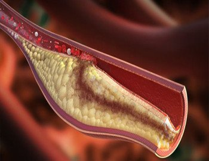
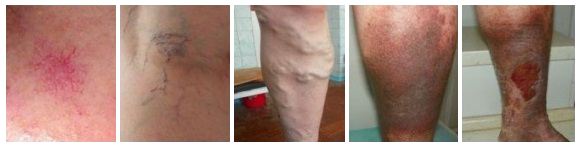
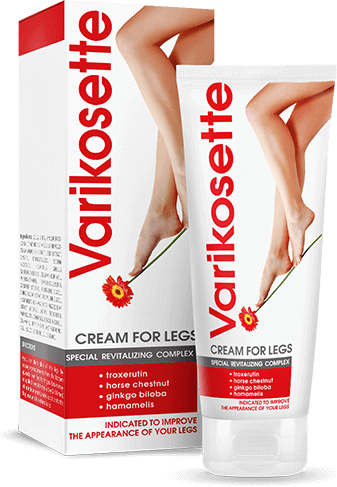

De los editores: la Organización Mundial de la Salud ha declarado
oficialmente que la enfermedad varicosa es una de las enfermedades más frecuentes de la actualidad.
De acuerdo con las estadísticas, que abarcan los últimos 20 años, el 57 % de las personas afectadas
por las varices mueren en los primeros 7 años después de que fueron diagnosticadas con la
enfermedad. 29 % de ellas fallecen en los primeros 3,5 años. Las causas de muerte por várices son
diferentes y varían desde la tromboflebitis hasta las úlceras tróficas y los tumores
cancerosos.
Hoy hablaremos con una profesora de medicina, investigadora líder del
Centro de Tratamiento de Venas con sede en Bogotá, la Dra. Laura López, sobre los tipos de medidas
que deben tomarse al ser diagnosticado con várices.
Buenos días, Laura. La primera pregunta se refiere a las estadísticas
proporcionadas por la OMS. ¿Qué tan exactas son? y ¿está de acuerdo con las cifras?
- La OMS es quizás la única institución médica internacional en la que se puede confiar. Aparte de la Cruz Roja, por supuesto. Pero esta última se dedica sobre todo a las actividades cotidianas, en las que realiza, por así decirlo, un trabajo «práctico». A diferencia de esta, la OMS monitorea las tendencias globales y desarrolla estrategias que ayudan a proteger a la humanidad de las enfermedades. En el caso de las várices, tienen muchas razones para generar una señal de alarma. En los últimos diez años, hemos visto un fuerte incremento de la tasa de mortalidad causada por esta enfermedad en Colombia. Al tomar en cuenta la frecuencia de nuevos casos diagnosticados de várices, la propagación de la enfermedad es un problema muy serio.
Quiero mencionar que los datos proporcionados por la OMS están confirmados por los datos estadísticos nacionales de Colombia. Según tengo entendido, nuestros colegas de otros países observan la misma tendencia.
- La OMS es quizás la única institución médica internacional en la que se puede confiar. Aparte de la Cruz Roja, por supuesto. Pero esta última se dedica sobre todo a las actividades cotidianas, en las que realiza, por así decirlo, un trabajo «práctico». A diferencia de esta, la OMS monitorea las tendencias globales y desarrolla estrategias que ayudan a proteger a la humanidad de las enfermedades. En el caso de las várices, tienen muchas razones para generar una señal de alarma. En los últimos diez años, hemos visto un fuerte incremento de la tasa de mortalidad causada por esta enfermedad en Colombia. Al tomar en cuenta la frecuencia de nuevos casos diagnosticados de várices, la propagación de la enfermedad es un problema muy serio.
Quiero mencionar que los datos proporcionados por la OMS están confirmados por los datos estadísticos nacionales de Colombia. Según tengo entendido, nuestros colegas de otros países observan la misma tendencia.
¿Cuál es el peligro de las várices? Es solo una dilatación común de
las venas, ¿no es así?
¿En serio? Lo que usted llama una «dilatación común de las venas» es, de hecho, una enfermedad muy peligrosa que causa muchas complicaciones. Para ser más clara al respecto, les voy a dar algunos ejemplos pictóricos.
En primer lugar, tengo que mencionar la tromboflebitis. . En términos simples, se trata de una situación en la que la sangre se coagula en sus venas. Esto puede causar cualquier cosa. Desde el desprendimiento del coágulo y su penetración en el corazón o los pulmones, provocando la muerte, hasta la obstrucción completa de la vena, que causa su muerte y putrefacción dentro de la pierna. Esto supone una puerta abierta para la gangrena que puede resultar en la amputación de las extremidades. La tromboflebitis es una complicación muy peligrosa que está presente en el 75 % - 80 % de las personas afectadas por várices. Sin embargo, la mayoría de ellas hacen caso omiso de esto.
¿En serio? Lo que usted llama una «dilatación común de las venas» es, de hecho, una enfermedad muy peligrosa que causa muchas complicaciones. Para ser más clara al respecto, les voy a dar algunos ejemplos pictóricos.
En primer lugar, tengo que mencionar la tromboflebitis. . En términos simples, se trata de una situación en la que la sangre se coagula en sus venas. Esto puede causar cualquier cosa. Desde el desprendimiento del coágulo y su penetración en el corazón o los pulmones, provocando la muerte, hasta la obstrucción completa de la vena, que causa su muerte y putrefacción dentro de la pierna. Esto supone una puerta abierta para la gangrena que puede resultar en la amputación de las extremidades. La tromboflebitis es una complicación muy peligrosa que está presente en el 75 % - 80 % de las personas afectadas por várices. Sin embargo, la mayoría de ellas hacen caso omiso de esto.

Vena obstruida (tromboembolismo)
En segundo lugar, está relacionada con las úlceras tróficas. . Estas están formadas por nudos varicosos y son muy peligrosas. El daño a la vena o a la várice descuidada puede provocar úlceras. Después de que surgen las úlceras es casi imposible eliminarlas por completo. La única opción es aislarlas al detener la expansión de la putrefacción y de esta forma salvar las piernas. Pero eso es todo lo que se puede hacer. Esto significa que la persona afectada tendrá que vigilar cuidadosamente sus piernas y luchar contra la recaída.
En tercer lugar, existe el riesgo de tumores cancerosos, por
supuesto. Estos pueden ser causados por úlceras tróficas o por la progresión de la tromboflebitis
que implica el surgimiento de radicales libres que, a su vez, causan tumores malignos. Ambas
complicaciones son cruciales para el desarrollo ulterior del cáncer. Tomando en cuenta que la
tromboflebitis, como ya lo he mencionado, está presente en el 75 % - 80 % de las personas afectadas,
las várices pueden considerarse como una enfermedad muy peligrosa. .

- Telengiectasia (starbust veins)
- Telengiectasia (venas araña)
- Várices reticulares
- Várices de las venas principales
- Insuficiencia venosa crónica
¿Cuáles son las opciones de tratamiento que ofrece la medicina
contemporánea?
Existe un tratamiento clásico que implica el uso de medicamentos, masajes y cargas físicas limitadas. Básicamente, permite reducir el riesgo de complicaciones y prolongar la vida de una persona. El problema principal de este tratamiento es que, por lo general, las personas pueden tomar la medicación prescrita de forma regular pero el ritmo de la vida moderna hace que sea difícil para ellos controlar su actividad física. Por otra parte, hay pocas personas que pueden recibir un masaje por lo menos 3-4 veces a la semana. Sin embargo, el tratamiento es eficaz solo si se hace uso de una combinación de los tratamientos anteriores. Si no, este tratamiento puede ser ineficaz.
Existe un tratamiento clásico que implica el uso de medicamentos, masajes y cargas físicas limitadas. Básicamente, permite reducir el riesgo de complicaciones y prolongar la vida de una persona. El problema principal de este tratamiento es que, por lo general, las personas pueden tomar la medicación prescrita de forma regular pero el ritmo de la vida moderna hace que sea difícil para ellos controlar su actividad física. Por otra parte, hay pocas personas que pueden recibir un masaje por lo menos 3-4 veces a la semana. Sin embargo, el tratamiento es eficaz solo si se hace uso de una combinación de los tratamientos anteriores. Si no, este tratamiento puede ser ineficaz.
Otra opción es el tratamiento hospitalario. Sin embargo, este complejo
tratamiento únicamente lo proporcionan con eficacia algunos hospitales privados. Esta opción puede
ser muy costosa. El precio puede ser de $1000-2000. Los hospitales públicos ofrecen solo la cirugía,
que puede conducir a otros problemas.
La tercera opción, que ha generado recientemente un entusiasmo entre
todos los flebólogos de Colombia, es una crema antivaricosa llamada
. Este es un medicamento que fue diseñado en Alemania
y que ha demostrado excelentes resultados. La crema ya ha sido probada clínicamente en Colombia y se
encuentra disponible en el mercado. Esta crema causó una ola de emoción en clínicas especializadas
en todo el mundo. Basta con decir que este es el único medicamento para el tratamiento de
várices que ha sido recomendado oficialmente por el Departamento de Salud . Por lo que sé,
el fabricante está luchando para satisfacer la demanda y procesar todos los pedidos.

Entonces, ¿cuál es la ventaja de esta crema antivaricosa? ¿Por qué
la demanda es tan alta?
En primer lugar, es muy eficaz. De acuerdo con los resultados de los ensayos clínicos, realizados por el Departamento de Salud y la Academia de Ciencias Médicas, la crema ayudó a lograr una recuperación completa en el 84 % de las personas. El 16 % restante ha demostrado un progreso significativo. Por otra parte, el fármaco eliminó la tromboflebitis en casi todas las personas involucradas en el estudio. Esto significa que la posibilidad de desarrollar cáncer se descartó .
En primer lugar, es muy eficaz. De acuerdo con los resultados de los ensayos clínicos, realizados por el Departamento de Salud y la Academia de Ciencias Médicas, la crema ayudó a lograr una recuperación completa en el 84 % de las personas. El 16 % restante ha demostrado un progreso significativo. Por otra parte, el fármaco eliminó la tromboflebitis en casi todas las personas involucradas en el estudio. Esto significa que la posibilidad de desarrollar cáncer se descartó .
Los estudios realizados en la UE, en donde se fabrica la crema,
revelaron las cifras de 83 % y 17 %. El estudio se llevó a cabo en CAPIO MOSEL-EIFEL-KLINIK, una
clínica de flebología innovadora con sede en Berlín. Se puede ver que las variaciones entre los dos
estudios son mínimas.
La crema se puede usar sin ningún tipo de medicamentos auxiliares.
Mantiene una acción constante en las piernas y mitiga las consecuencias de las cargas físicas. Esta
es una gran ventaja para todas las personas que mantienen sus piernas bajo una presión constante
durante el día de trabajo. Después de los primeros días de aplicación, la crema elimina muchos
de los síntomas desagradables de las várices. . Además, la crema elimina los coágulos de
sangre, mejora la circulación sanguínea y recupera las paredes de las venas.
Contiene una combinación orgánica y segura de plantas. Cada componente
de la crema realiza sus funciones. Los componentes interactúan complementando la acción de los demás
y creando un verdadero milagro en el proceso del tratamiento de las várices. Me gustaría describir
brevemente cada componente.
Troxerutina (elimina el dolor y la fatiga en sus piernas) ;
Ginkgo Biloba y miel (estimula la microcirculación de la sangre en las piernas) ;
Hojas de castaño de indias y de hamamelis (fortalecen las paredes de los vasos sanguíneos) ;
Urea, aceite de maíz, aceite de girasol (nutren e hidratan la piel) ;
Lactato de mentilo y mentol (mitigan la fatiga en las piernas) .
Troxerutina (elimina el dolor y la fatiga en sus piernas) ;
Ginkgo Biloba y miel (estimula la microcirculación de la sangre en las piernas) ;
Hojas de castaño de indias y de hamamelis (fortalecen las paredes de los vasos sanguíneos) ;
Urea, aceite de maíz, aceite de girasol (nutren e hidratan la piel) ;
Lactato de mentilo y mentol (mitigan la fatiga en las piernas) .
En la actualidad, la mayoría de las redes farmacéuticas de
Latinoamérica no pueden llegar a un acuerdo con el fabricante. La crema se encuentra disponible solo
en algunas farmacias en un par de ciudades principales. La razón de esto es bastante trivial. Al
considerar la eficacia de la crema y la demanda pronosticada, las farmacias quieren aumentar su
precio hasta en un 500 %-700 %. Al mismo tiempo, el fabricante lucha por un precio justo y gastos
moderados que no sean más altos que los normales. En la actualidad, las partes se encuentran
inmersas en negociaciones ásperas. Con suerte, finalmente llegarán a un acuerdo. Sobre todo,
considerando el hecho de que el Departamento de Salud se ha unido a las negociaciones.
Por el momento, la crema antivaricosa se vende en una página web especial. Esta es la única opción para que el
medicamento sea accesible a todas las personas que realmente lo necesitan. Recientemente he
comprobado cómo funciona la página web y tengo que decir que todo es muy práctico. Todo lo que debe
hacer es dejar su nombre y número de teléfono. Después de eso, será contactado por un empleado de
ventas para especificar los detalles de la entrega. El pago se realiza solo después de que reciba la
crema. Es muy conveniente para aquellos que rara vez usan el Internet para pedir cosas.
Laura, ¿hay algo más que te gustaría decirles a nuestros lectores
antes de terminar nuestra entrevista?
La única cosa que quiero recordarles es que la enfermedad es muy
peligrosa. Las várices no son una enfermedad inocua sino una enfermedad letal. Si ha detectado
las manifestaciones iniciales de las várices como los nódulos vasculares, venas de araña,
inflamación frecuente, dolor y sensación de pesadez en las piernas, debe darse cuenta del
tipo de peligro que está enfrentando.
No espere hasta que un coágulo separado detenga su corazón o los
oncólogos lo diagnostiquen con cáncer. . Trate la enfermedad en la etapa en la que todavía se
puede detener. Si usted no tiene tiempo ni dinero para los hospitales privados, use la crema
antivaricosa . Este es
uno de los medicamentos más eficaces y económicos que se encuentran disponibles actualmente en el
mercado.
Entrevistada por Mercedes Peña
Las fotografías se toman de fuentes abiertas
Entrevistada por Mercedes Peña
Las fotografías se toman de fuentes abiertas
Puede enviar sus comentarios a
sitio web ¡y los
publicaremos aquí!

Comentarios: